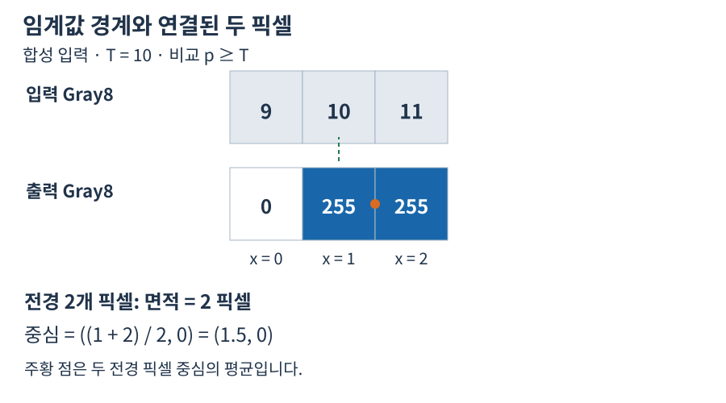

경계와 형식 선택
비교는 p ≥ T입니다. 아래 합성 입력은 경계값이 포함됨을 보여줍니다.


판독 기준
- 경계와 같은 10도 전경입니다.
- 면적은 전경 픽셀 2개이며 길이나 물리 면적이 아닙니다.
수치와 도형은 연결된 계약의 핵심 관계를 설명하는 예입니다. 실제 SDK 출력으로 명시한 자료를 제외하면 실행 결과나 장비 실측으로 해석하지 않습니다. 좌표계·입력 형식·수명과 오류 조건은 관련 API 계약을 확인한 뒤 적용하세요.
| 조건 | 결과 또는 조치 |
|---|---|
| T=10, [9,10,11] | [0,255,255] |
| 유한한 T 및 7종 Gray | 새 Gray8 마스크 |
| 색상 이미지 또는 비유한 T/부동소수 입력 | 오류; 입력 형식과 값을 먼저 검증 |
이미지 형식은 전체 14종이지만 이 연산의 입력은 그중 Gray8, Gray16, GrayI16, GrayI32, GrayU32, GrayF32, GrayF64 일곱 종입니다. ROI에서 생성된 마스크는 ROI 원점을 보존합니다. 결과는 원본을 변경하지 않는 별도 소유 이미지입니다.
경계와 형식 선택 · 핵심 동작
그림의 T=10은 입력 9,10,11을 각각 0,255,255로 바꿉니다. 10이 포함되는 이유는 비교가 초과가 아니라 이상이기 때문입니다. 결과의 255는 원본 픽셀이 255였다는 뜻이 아니라 조건을 만족했다는 이진 표시입니다.
경계와 형식 선택 · 입력과 결과
이 함수가 지원하는 회색 형식은 일곱 가지이며 출력 형식은 입력과 무관하게 Gray8입니다. Gray16이나 GrayF64의 값을 0–255로 먼저 바꾸는 작업이 자동으로 수행되지는 않습니다. 기준 T는 원본 숫자 단위로 전달하고, 비교에 필요한 값이 유한한지 확인해야 합니다.
경계와 형식 선택 · 좌표와 소유권
원본의 ROI만 처리할 수 있고 결과 마스크는 ROI의 원점을 보존합니다. 이 마스크의 로컬 위치와 원본 전체 위치를 비교할 때 원점을 사용하며, 결과 영상은 원본을 변경하지 않는 별도 소유 객체입니다. Python과 C#에서는 각 영상 핸들의 해제를 명시합니다.
경계와 형식 선택 · 오류와 판단
전경이 예상보다 많으면 T가 낮거나 배경이 비영으로 선택되었을 수 있습니다. 반대로 모두 0이면 실제로 T보다 낮은지, 영상 범위와 T의 단위가 맞는지 살펴보십시오.